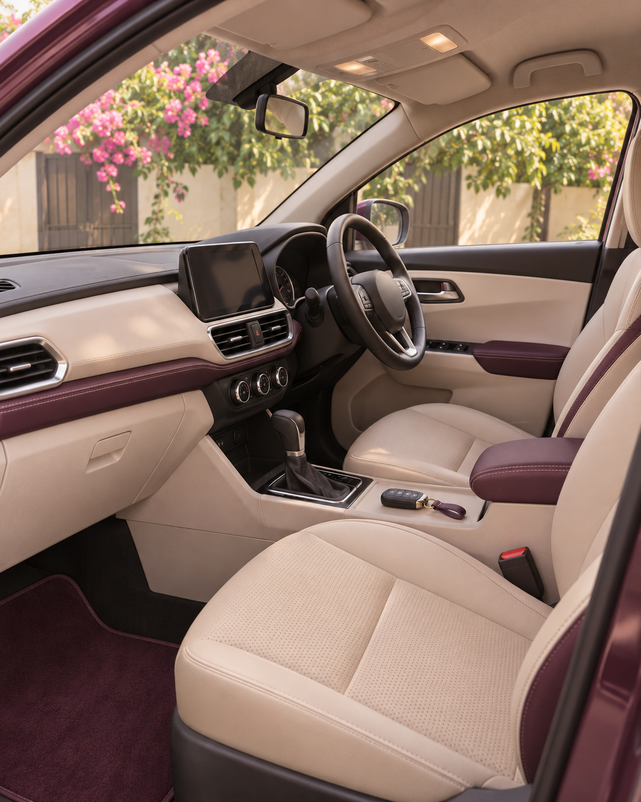

01 / HERDRIVE CAR
Your space.
Your pace.
A comfortable car ride with a female Captain, whether you’re heading to class or across town.
A ride to your next chapter. Women-only journeys with female Captains, a fare you agree on, and confidence that goes with you.
Our proposed difference is the combination: a women-only rider and Captain pool, fares agreed together, documented Captain checks, and support designed for both sides of the ride.
Women-only transport is not a new idea. We aim to bring these features together in a focused Karachi pilot; this is our proposed offering, not a claim of proven superiority or guaranteed safety.
For your everyday plans and your bigger ambitions. Choose the way you want to move.
A comfortable car ride with a female Captain, whether you’re heading to class or across town.
A lighter way to make your everyday trips with a female Captain. Part of our planned launch.
HerDrive’s proposed bidding model puts the choice in your hands and respects your Captain’s time.
Choose your pickup, destination, and a car or scooty.
Your Captain can accept or suggest another fare. You choose before you go.
Check the Captain and plate, then confirm your ride PIN before setting off.
Our safety plan supports both the woman taking the ride and the woman behind the wheel.
Proposed Captain checks include CNIC, police verification, and selfie matching.
Live trip sharing and route alerts are designed to help loved ones follow your journey.
Match the car’s plate and ride PIN with your Captain before your trip starts.
SOS for riders and Captains, with a planned 24/7 incident desk.

Be more than a driver. Be a Captain who helps other women get where they want to go.
Our planned first service areas are Karachi South and East. From morning lectures to late workdays, we’re building around women’s real journeys.
Cars and scooties · Planned launch
Then Lahore and Islamabad
Women-only parcel delivery and Captain Driving Academies
Getting to university, showing up for work, or making plans should feel possible. HerDrive is our idea for a women-to-women ride service that makes everyday movement more comfortable and creates earning opportunities for female Captains.
Founded by BS FinTech students at FAST National University, Karachi.
15% platform commission; 85% Captain share. The proposed commission applies to the agreed fare on completed rides. It is revenue, not profit.
Illustrative unit economics: Rs60 revenue − Rs25 assumed variable cost = Rs35 contribution per ride, before fixed costs and taxes. Rs25 is a planning assumption for payment processing, support and other per-ride costs—not a measured cost. Captain earnings above are before the Captain’s own expenses.
Sponsor-funded launch offer: We propose 50% off the first ride, capped at Rs300, subject to an agreed sponsor budget and eligibility rules. On a Rs400 ride, the rider pays Rs200 and the sponsor funds Rs200; the proposed Rs340 Captain payment and Rs60 platform revenue remain based on the full fare.
No sponsor funding has been confirmed. We would activate the offer only after funding is secured, limit redemptions to that budget and reconcile each eligible completed ride. Without funding, the offer would not run.
Licensing and insurance: Before any live pilot, confirm the applicable operator, driver, vehicle, insurance and tax requirements with the relevant Sindh authorities and qualified advisers. We are not claiming current approvals or licences.
Captain vetting at scale: Proposed checks include identity, valid driving licence, vehicle documents and condition, and background verification through an authorised process. Maintain a review log, document-expiry reminders, periodic rechecks and a process to suspend and investigate complaints.
Data privacy: Collect only necessary information with clear permission, restrict access by role and set a retention and deletion process. Our current interest forms collect contact details, not CNIC copies, exact addresses or live location.
Operational risk: Begin with a limited service area matched to available Captains. Test support procedures and response capacity before enabling live SOS. The current website does not dispatch rides or emergency help.
We’re preparing for launch. Live ride requests and payments are not available yet. Android and iOS apps are planned.
The concept is for women passengers and female Captains. Our initial target audience is women aged 18–45 in Karachi South and East.
A rider suggests a fare. A Captain can accept or counter. Both agree before the trip.
We are planning a sponsor-funded 50% first-ride discount, capped at PKR 300. It is a planned launch offer, not a currently redeemable promotion.
The real service is planned to connect riders and Captains with an incident desk. The SOS feature on this website is only a demonstration and does not contact anyone or send a location.